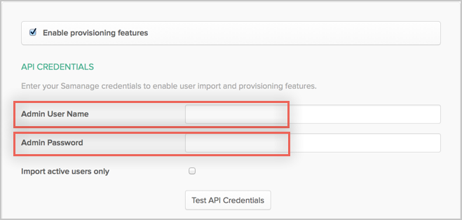
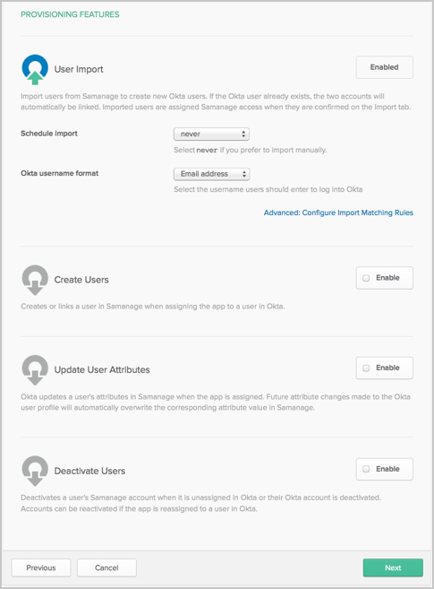

This guide provides the steps required to configure Provisioning for NetSuite.
To get access all supported features, including Schema Discovery, the feature flag PROV_SAMANAGE_ENABLE_CLOUD_DIRECTORY must be turned on before you create your app instance.
The following provisioning features are supported:
Push new users.
New users created through OKTA will also be created in the third party application.
Push profile update.
Updates made to the user's profile through OKTA will be pushed to the third party application.
Push user deactivation.
Deactivating the user or disabling the user's access to the application through OKTA will deactivate the user in the third party application.
Import new users.
New users created in the third party application will be downloaded and turned in to new AppUser objects, for matching against existing OKTA users.
Import profile updates.
Updates made to a user's profile in the third party application will be downloaded and applies to the profile fields stored locally in OKTA. If the app is the system of record for the user, changes made to core profile fields (email, first name, last name, etc) will be applied to the Okta user profile. If the app is NOT the system of record for the user, only changes made to app-specific fields will be applied to the local user profile.
Group push.
Groups and their members can be pushed to remote systems. More about using group push operations you can find here: Using Group Push
Configure your Provisioning settings for Samanage as follows:
Check the Enable provisioning features box.
Enter your Samanage API Credentials
Admin Username: An admin username that has provisioning rights.
Admin Password: The password for the above admin username.
Import active users only: If you enable this flag, you can import only active users from Samanage. Otherwise all users will be imported.

Scroll down and select the Provisioning Features you want to enable.

Click Save.
You can now assign people to the app (if needed) and finish the application setup.
Samanage supports User's Schema Discovery, so you can add some extra attributes to User's Profile, to do that, follow the instructions below:
In Okta, from the Admin dashboard, select Directory > Profile Editor.
Select the APPS section in the left navigation bar, then find your app in the list.
Check the list of attributes, and if you decide you need more, click Add Attribute. A list of extended attributes will appear:

Select the attributes you want to add, then click Save.
You can now import and push these user attribute values to/from Samanage.